Stap voor stap door BoodschappenScan — met screenshots uit de app
Dit is de volledige handleiding met screenshots. In de app staat een korte samenvatting met links hierheen. Klik op een screenshot om te vergroten. Waarom je zelf invoert? Lees Hoe het werkt.
Verwijder je de app? Dan ben je al je gegevens kwijt. Maak vóór verwijderen altijd een back-up via tab Meer → Back-up maken.
Starten
Open tab Scannen, kies je supermarkt en start een bon. Meerdere bonnen op één dag bij dezelfde winkel? Gebruik «Nieuwe bon» voor een aparte sessie.
1
Nieuwe bon starten
Kies bovenaan je supermarkt en tik op Nieuwe bon starten. De camera opent om barcodes te scannen. Heb je vandaag al gescand bij deze winkel? Dan zie je Verder met scannen in plaats van een nieuwe bon.
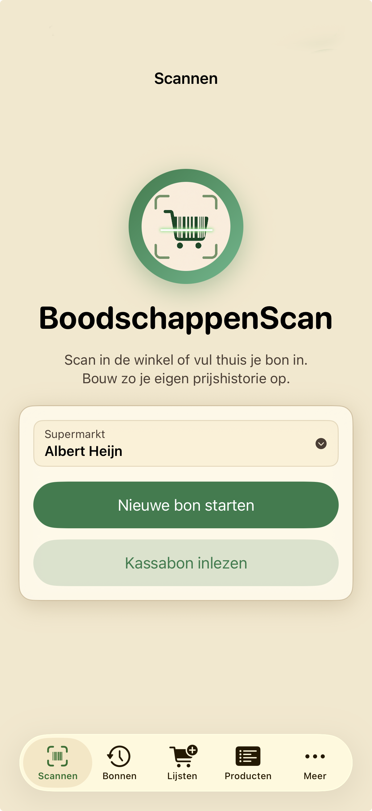
Startscherm — supermarkt kiezen en bon beginnen.
2
Supermarkt selecteren
Tik op de supermarktnaam voor een keuzelijst. Standaard staan veel Nederlandse ketens al in de app. Extra winkels voeg je toe via tab Meer → Supermarkten.
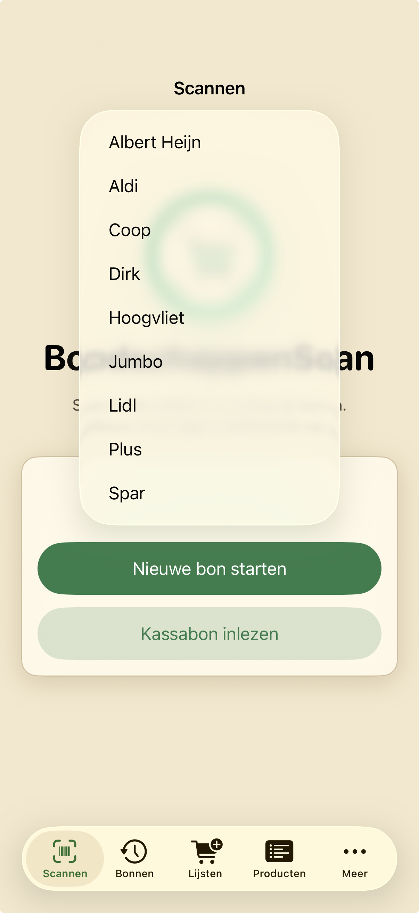
Supermarkt kiezen vóór het scannen.
3
Sessie van vandaag hervatten
Heb je vandaag al een open bon bij deze winkel? Op het startscherm (tab Scannen) zie je Verder met scannen en eventueel Nieuwe bon. Hier staat geen eurobedrag — alleen welke winkel en dat er nog een lopende sessie is.
Tik op Verder met scannen. In de scanner (camera + productlijst) zie je boven de lijst hoeveel producten er op de bon staan en het label Totaal met het lopende bontotaal (som van alle regels tot nu toe).
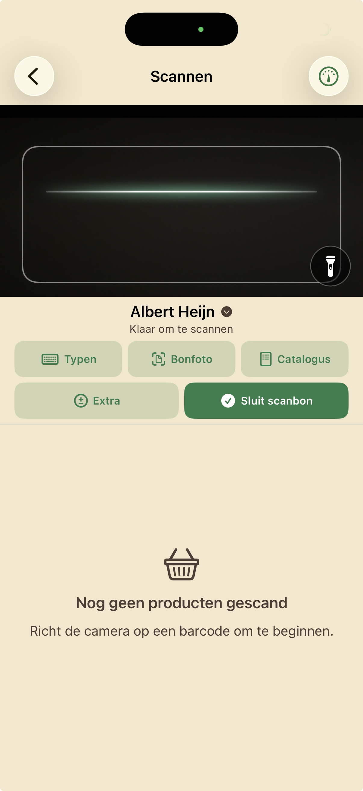
Startscherm — Verder met scannen (nog geen totaal zichtbaar).
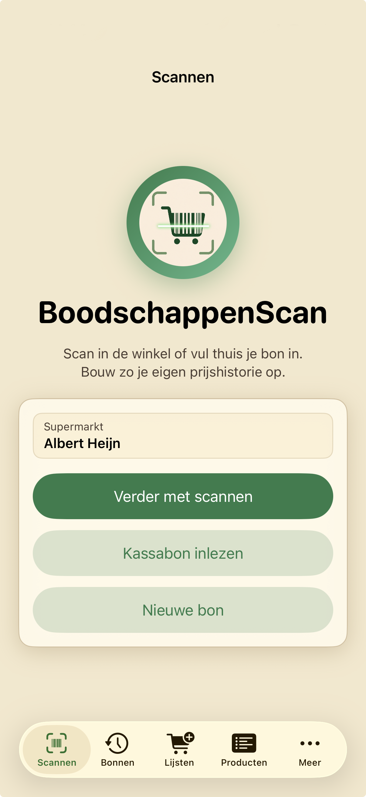
Na Verder met scannen: in de scanner zie je aantal producten en Totaal (€).
Scannen
Je kunt in de winkel scannen terwijl je loopt, of thuis op je gemak je kassabon nalopen via Typen — product voor product invoeren en aanpassen waar nodig. Richt de camera op barcodes, controleer naam en prijs, en sluit de bon als je klaar bent. Onder het camerabeeld en de productlijst staan vier vaste knoppen.
1
De vier knoppen onder de camera
In de scanner zie je onder het camerabeeld (en boven de productlijst) altijd deze vier knoppen. Ze doen hetzelfde op elk schermformaat; op een smalle iPhone staan ze soms in twee rijen van twee.
Typen — Product handmatig invoeren zonder barcode: typ naam, aantal, prijs, inhoud en categorie in de velden. Handig voor losse groente/fruit, bakkerij of als scannen niet lukt. Liever niet typen? Het microfoon-icoon bij een veld laat je inspreken in plaats van typen.
Catalogus — Een product kiezen dat je eerder al hebt gescand of ingevoerd. Je hoeft niet opnieuw te scannen; je kunt zoeken op naam, categorie of barcode en de laatste prijs wordt voorgesteld.
Extra — Regels die géén gewoon product zijn: statiegeld, emballage, kortingen of handmatige correcties. Koppel kortingen aan een product met dezelfde naam op de bon; gebruik een minteken voor kortingen.
Sluit scanbon — De groene knop (in de app «Sluit scanbon»; soms compact als «Sluit bon»). Hiermee rond je de bon af en sla je hem op in tab Bonnen. Tot middernacht kun je daarna nog iets toevoegen via Bonnen.
Scannen zelf doe je met de camera — die knoppen zijn er naast. Boven de productlijst zie je het aantal regels en het lopende Totaal (bontotaal).
2
Camera en eerste scan
De groene lijn helpt je de barcode te richten. Bij weinig licht: zaklamp rechtsonder. Nog geen producten? Onderaan staat «Nog geen producten gescand».
Scanner klaar — richt de camera op een barcode.
3
Producten op de bon
Na elke scan verschijnt het product in de lijst. Controleer prijs, inhoud, categorie en eenheidsprijs (bijv. €/kg). Met +/− pas je het aantal aan. Onbekende barcode? De app kan een naam voorstellen — jij bevestigt.
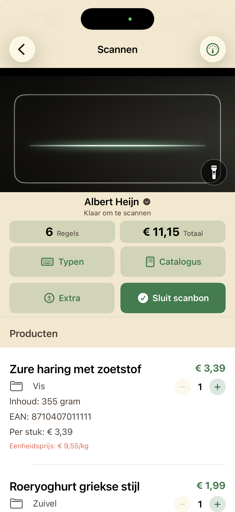
Gescande producten met prijs, categorie en eenheidsprijs.
4
Handmatig typen of inspreken
Tik op Typen (zie stap 1). Vul de velden handmatig in: naam, aantal, prijs, inhoud en categorie. Bij elk tekstveld kun je desnoods het microfoon-icoon gebruiken om in te spreken in plaats van te typen. Elk product dat je zo toevoegt komt ook in je catalogus (tab Producten).
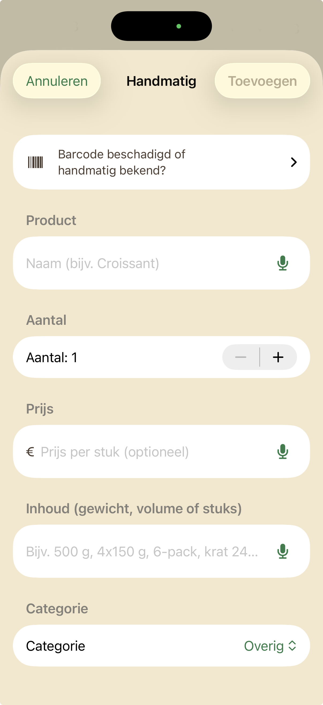
Handmatig typen in de velden — inspreken via het microfoon-icoon kan ook.
5
Uit je catalogus kiezen
Tik op Catalogus (zie stap 1). Kies een eerder product; zoek desnoods op naam of barcode. Handig voor vaste boodschappen zonder opnieuw te scannen. Gratis: max. 200 producten in de catalogus.
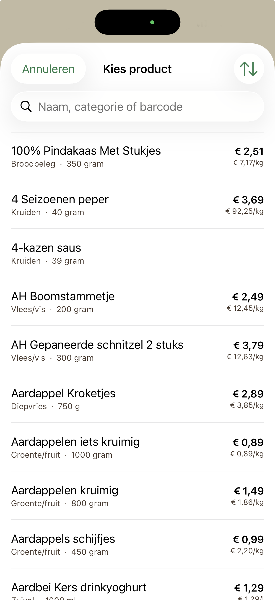
Product kiezen uit je eigen catalogus.
6
Kortingen, statiegeld en extra regels
Tik op Extra (zie stap 1). Voeg statiegeld, emballage, kortingen of correcties toe — dit zijn géén gewone productregels. Koppel kortingen aan het product via dezelfde naam op de bon. Gebruik een minteken voor kortingen; alleen «Korting» zonder productnaam koppelt niet aan een product.
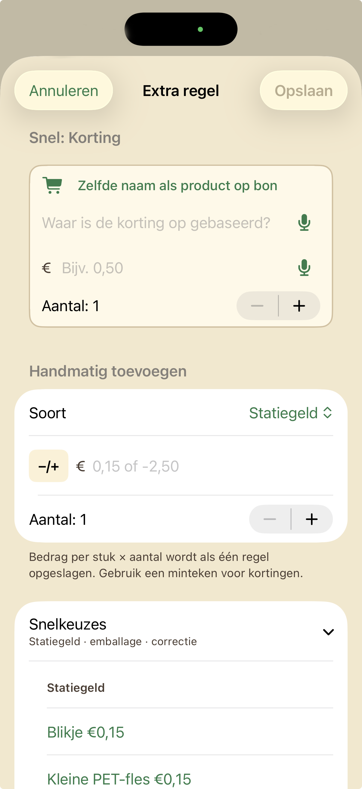
Statiegeld, korting of handmatige correctie.
7
Budgetlimiet (Volledig)
Met BoodschappenScan Volledig stel je via het meter-icoon rechtsboven een limiet in voor deze bon. Je krijgt een waarschuwing als het bontotaal in de scanner (het bedrag bij Totaal) je limiet overschrijdt.
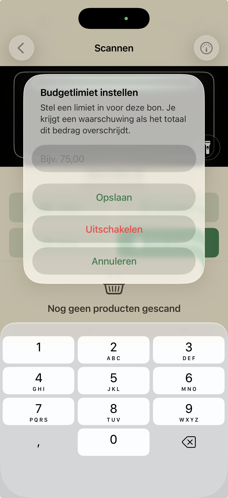
Budgetlimiet per bon — alleen met Volledig.
8
Bon sluiten
Tik op de groene knop Sluit scanbon (zie stap 1) als je klaar bent. De bon wordt opgeslagen in tab Bonnen. Minstens één product of extra regel is nodig — een lege bon kun je niet sluiten. Je kunt optioneel meteen een back-up maken. Tot middernacht kun je nog iets toevoegen via tab Bonnen.
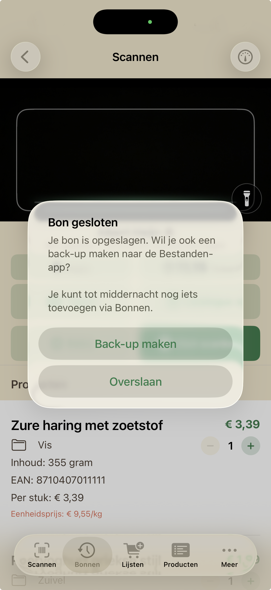
Bon opgeslagen — optioneel back-up maken.
Producten
Alles wat je scant of invoert komt in je persoonlijke catalogus. Tab Producten — zoek, filter op favorieten, sorteer en tik voor het prijsverloop. Gratis: max. 200 catalogusproducten.
1
Catalogusoverzicht
Per product zie je categorie, laatste winkel, barcode, laatste prijs en eenheidsprijs (€/kg of €/l). Oranje badge = eenheidsprijs; rood «ouder dan 30 d» = prijs is verouderd — scan opnieuw voor actuele vergelijking.
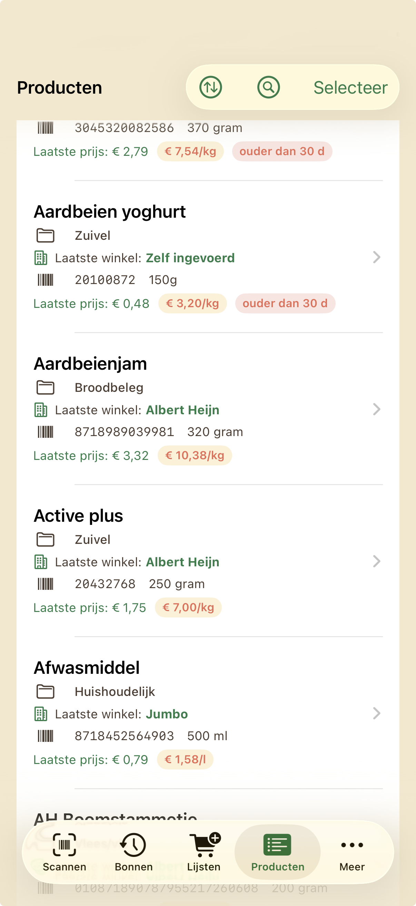
Je catalogus — laatste prijs per winkel.
2
Prijsverloop per product
Tik op een product voor metingen per winkel: kiloprijs per supermarkt, alle metingen en (bij gekoppelde korting) labels zoals «Korting op bon» of «Waarschijnlijk aanbieding». Staat er Vergelijk supermarkten bovenaan? Dan zie je per kilo/liter bij welke winkel jij historisch het voordeligst uit bent voor dit product (of productgroep, bijv. verschillende verpakkingen van dezelfde soort). Met BoodschappenScan Volledig zie je onder Grafiek een prijsgeschiedenis per winkel — boven de grafiek staat de productnaam. Veeg een meting naar links om die te wissen.
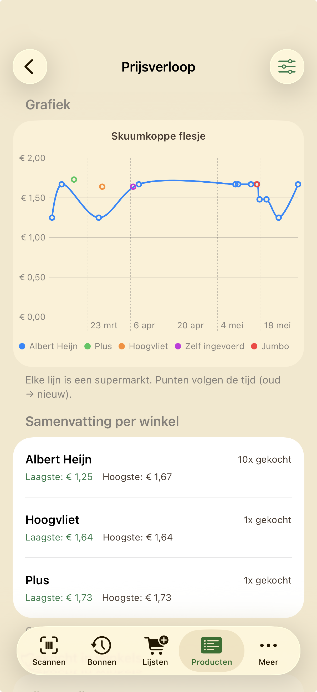
Prijsverloop — kiloprijzen, metingen en grafiek (Volledig).
3
Product bewerken
Open het menu (⋯) rechtsboven in het prijsverloop of veeg op een catalogusregel naar links → Bewerk product. Pas naam, barcode, categorie, inhoud (voor €/kg) en eventueel een referentieprijs aan. Kies de categorie zelf in de lijst.
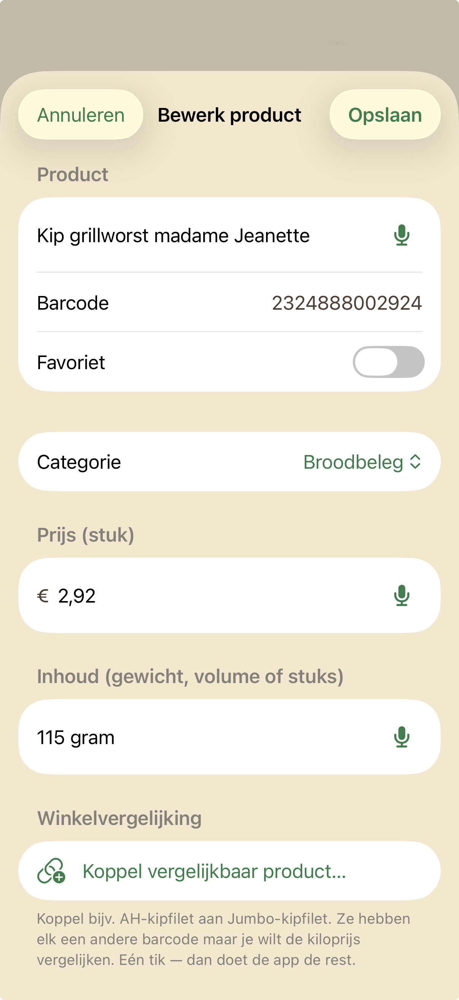
Naam, inhoud en categorie — basis voor vergelijken en grafieken.
4
Favorieten
Markeer vaste boodschappen als favoriet: veeg op een catalogusregel naar links → Favoriet, of zet de schakelaar aan bij Bewerk product. In tab Producten kun je met Alleen favorieten filteren. Op een boodschappenlijst verschijnt onderaan Favorieten toevoegen — zo zet je je vaste producten in één keer op de lijst.
Boodschappenlijsten
Maak lijsten van vaste producten, vink af in de winkel en zie een totaalschatting op basis van je laatste prijzen.
1
Lijstenoverzicht
Tab Lijsten toont al je boodschappenlijsten. Gratis: max. 3 lijsten. Nieuwe lijst: + knop (of Uit sjabloon… met Volledig). Tik op een lijst om producten toe te voegen, af te vinken of te scannen vanuit de lijst.
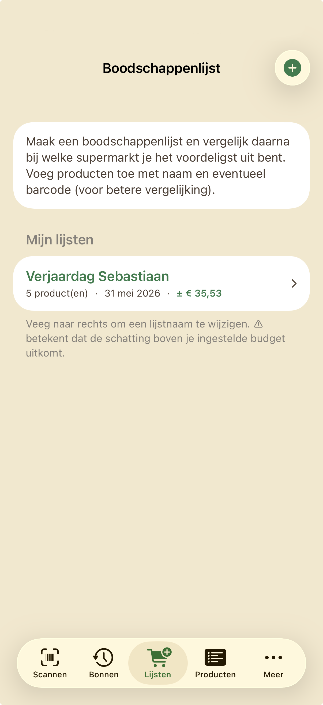
Al je boodschappenlijsten op één plek.
2
In de winkel: afvinken en scannen
Vink producten af terwijl je winkelt. Onderaan zie je «X van Y gepakt» en een totaalschatting. Boven de producten staat Waar is je lijst het voordeligst? met een voorproef — tik op Bekijk volledige vergelijking voor het volledige overzicht. Groene labels tonen waar jij historisch de voordeligste eenheidsprijs had. Knoppen Scannen en Toevoegen voegen producten toe. Heb je favorieten die nog niet op de lijst staan? Gebruik Favorieten toevoegen onderaan.
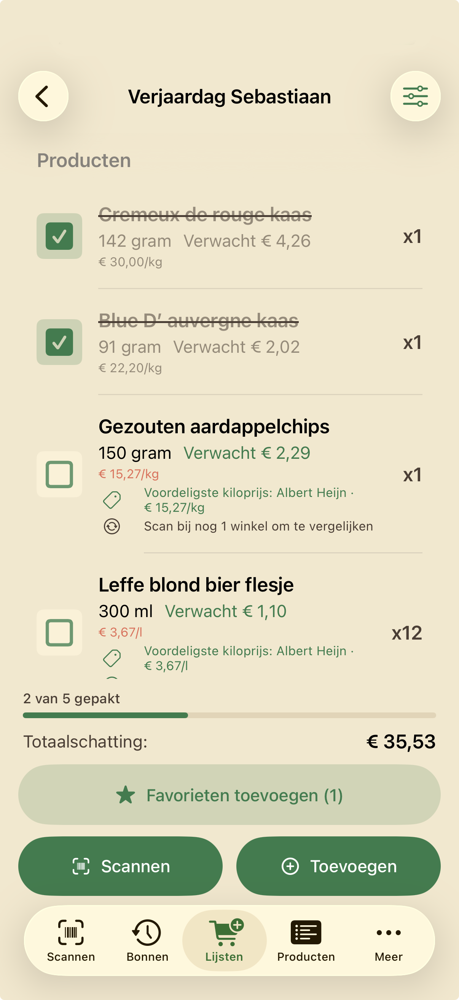
Lijst in de winkel — afvinken, scannen, totaalschatting.
3
Menu van de lijst (⋯)
Rechtsboven op een lijst (⋯): Budget instellen (Volledig), Sorteren op categorie of op toevoegingsvolgorde, en Opslaan als sjabloon (Volledig). Winkelvergelijking vind je in de sectie Waar is je lijst het voordeligst?, niet in dit menu. Standaard sorteert de lijst op volgorde van toevoegen (nieuwste bovenaan).
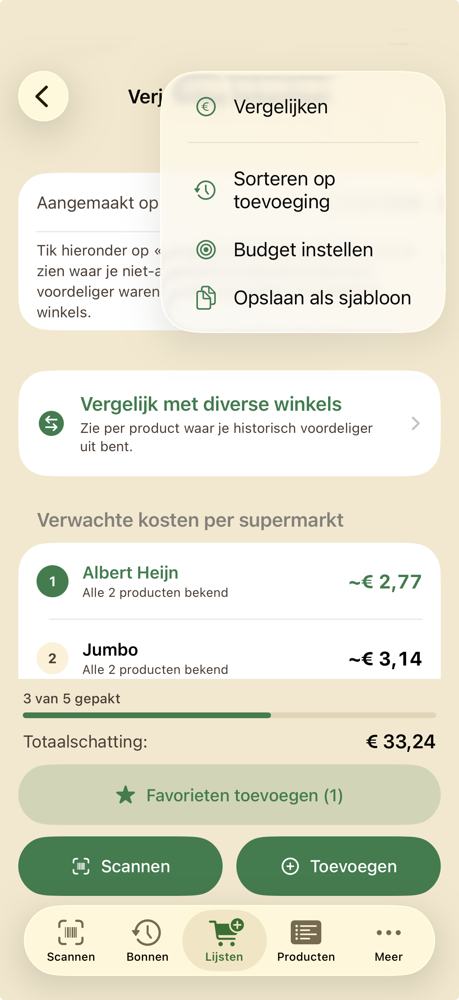
Het ⋯-menu — budget, sorteren en sjabloon.
4
Budget op een lijst (Volledig)
Kies Budget instellen en vul een bedrag in. De voortgangsbalk onderaan kleurt rood zodra de totaalschatting (op basis van je catalogusprijzen) het budget overschrijdt. Pas het bedrag aan of verwijder het budget via hetzelfde menu.
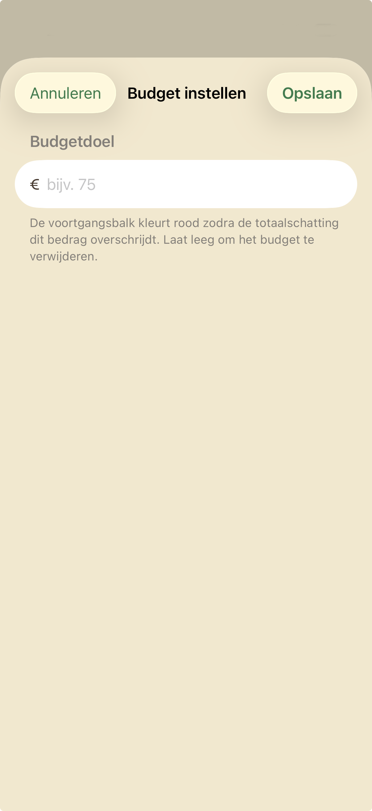
Budgetlimiet per lijst — alleen met BoodschappenScan Volledig.
5
Lijst uit sjabloon (Volledig)
Herhaal je dezelfde boodschappen vaak? Sla een lijst op als sjabloon via het ⋯-menu → Opslaan als sjabloon (Volledig). Nieuwe lijst vanuit sjabloon: op het lijstenoverzicht het +-menu → Uit sjabloon…. Het sjabloon kopieert producten en aantallen, niet wat je al had afgevinkt.
Vergelijken
Zie bij welke supermarkt jij historisch voordeliger uit bent — op basis van prijzen die jij zelf hebt ingevoerd, niet op landelijke prijslijsten.
1
Winkelvergelijking per lijst
Open een lijst. In de sectie Waar is je lijst het voordeligst? tik je op Bekijk volledige vergelijking (of Vergelijk supermarkten als er nog onvoldoende data is). Werkt als je dezelfde (of vergelijkbare) producten bij minstens twee winkels hebt gescand. Kiloprijs telt mee waar gewicht of inhoud bekend is. Pas de vergelijkingsperiode onderaan aan.
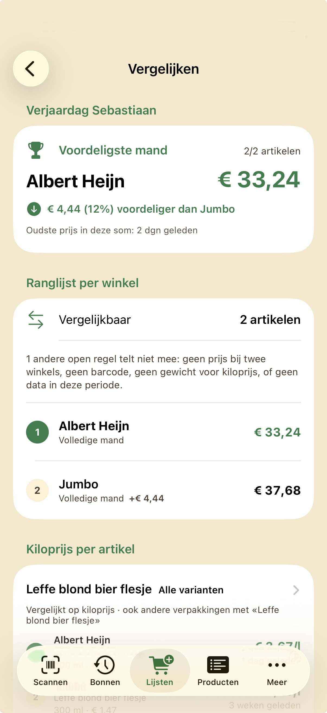
Vergelijking op basis van jouw eigen scanhistorie.
2
Per product: vergelijk supermarkten
Naast vergelijken per lijst kun je in tab Producten → tik op een product → Vergelijk supermarkten zien bij welke winkel jij per kilo of liter het voordeligst uit bent. Werkt als je hetzelfde (of vergelijkbare varianten in één productgroep) bij meerdere winkels hebt gescand.
Bonnen
Tab Bonnen: geschiedenis, details per sessie, delen, PDF-export en (met Volledig) maandterugblik. Optioneel: widget op je beginscherm met een korte samenvatting van je laatste bon (lokaal op je iPhone).
1
Geschiedenis en maandterugblik
Bonnen staan per maand gegroepeerd. Met Volledig zie je bovenaan een terugblik: totaal uitgegeven, gemiddelde per bon en verdeling per winkel.
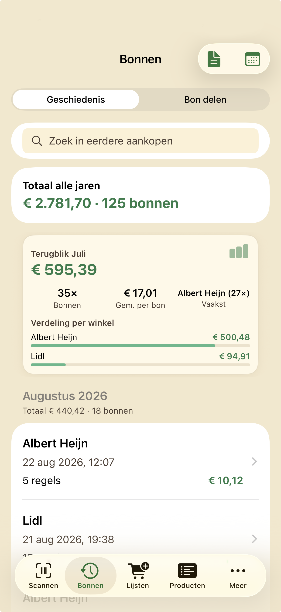
Geschiedenis — maandterugblik met Volledig.
2
Sessiedetails
Tik op een bon voor het overzicht: supermarkt, datum, totaal, producten. Je kunt verder scannen in dezelfde sessie (tot middernacht na sluiten) of filteren op categorie.
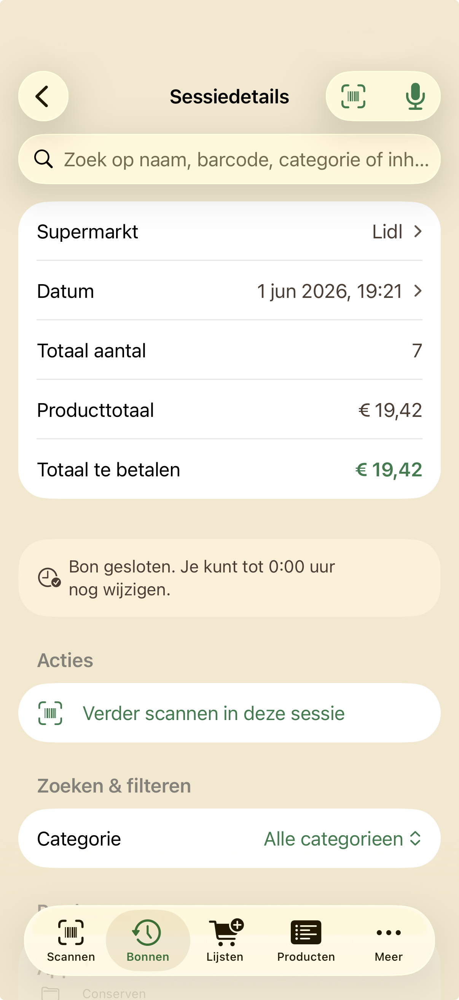
Detail van één bon — bewerken of verder scannen.
3
Bon delen
Tab Bonnen → Bon delen. Kies een bon en deel als kassabon-afbeelding, tekst of via het deelmenu van iOS.
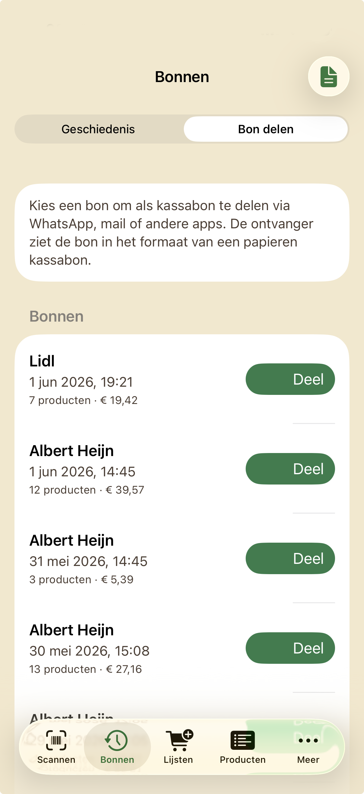
Bon kiezen om te delen.
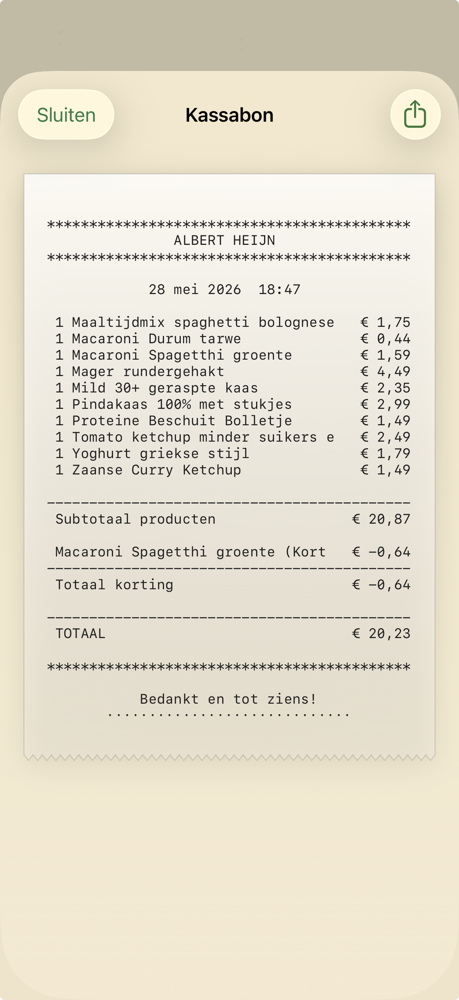
Voorbeeld: bon als kassabon-afbeelding.
4
PDF-export
Via het doc-icoon maak je een PDF-overzicht. Filter op jaar, maand, dag of week, en optioneel op supermarkt of categorie. Leeg laten = alles meenemen. Deel alleen het PDF — geen JSON-back-up meesturen.
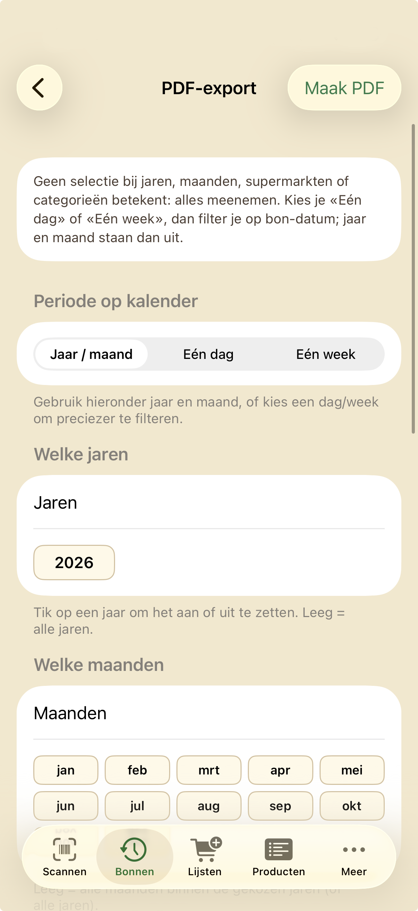
PDF maken met filters op periode.
5
Widget op je beginscherm
Voeg de widget Laatste bon toe via het iOS-beginscherm (lang indrukken → + → zoek BoodschappenScan). De widget toont lokaal een korte samenvatting van je meest recente bon: winkel, datum, totaal en aantal producten. Geen account nodig; de gegevens blijven op je iPhone.
Tab Meer
Instellingen, beheer en extra acties: categorieën, supermarkten, back-up, privacy en upgrade.
1
Categorieën beheren
Tab Meer → Categorieën. Voeg eigen categorieën toe (+), pas namen aan of verwijder wat je niet gebruikt. De categorie Overig blijft altijd beschikbaar. Producten met een verwijderde categorie behouden hun oude naam — ze worden niet automatisch omgezet.
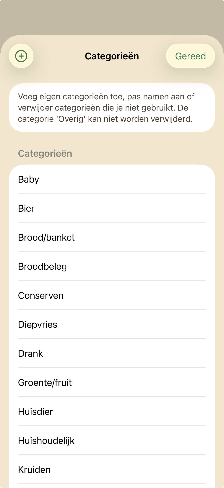
Eigen categorieën aanpassen onder tab Meer.
2
Bon voor een eerdere datum
Heb je een kassabon van een andere dag? Tab Meer → Bon invoeren voor eerdere datum. Kies de dag in de kalender en scan of voer daarna je bon in zoals gewoonlijk.
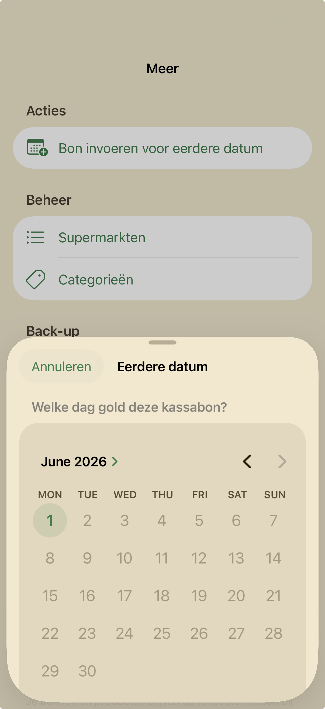
Datum kiezen vóór je een oude bon invoert.
3
Supermarkten beheren
Tab Meer → Supermarkten. Voeg winkels toe die je vaker bezoekt, pas namen aan of verwijder wat je niet nodig hebt. De lijst op het startscherm en bij het scannen volgt jouw eigen supermarkten.
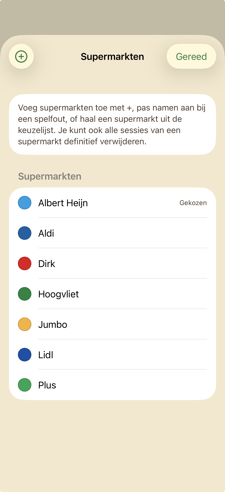
Eigen supermarkten toevoegen en beheren.
4
Automatische avondback-up
In tab Meer, sectie Back-up, kun je Automatisch elke avond aan- of uitzetten. Rond ±23:00 (of bij de volgende app-start) maakt de app dan een lokale kopie met bestandsnaam Boodschappen_Backup_Auto_…. Handmatig back-uppen na grote wijzigingen blijft verstandig — vooral vóór je de app verwijdert of van telefoon wisselt.
Back-up & BoodschappenScan Volledig
Maak regelmatig een back-up vóór je de app verwijdert of van telefoon wisselt. Upgrade eenmalig via Apple als je de limieten wilt opheffen.
1
Back-up maken
Tab Meer → Back-up maken. Het bestand (.json) bevat je bonnen, producten, lijsten én je eigen categorieën en supermarkten. Het komt op je iPhone onder Bestanden → Op mijn iPhone → Boodschappen. Via «Kopieer naar iCloud / AirDrop / …» maak je een extra kopie elders. Gebruik Mail alleen als je bewust een kopie per e-mail wilt — dat is je volledige database. Optioneel: zet Automatisch elke avond aan in dezelfde sectie (zie tab Meer, stap 4).
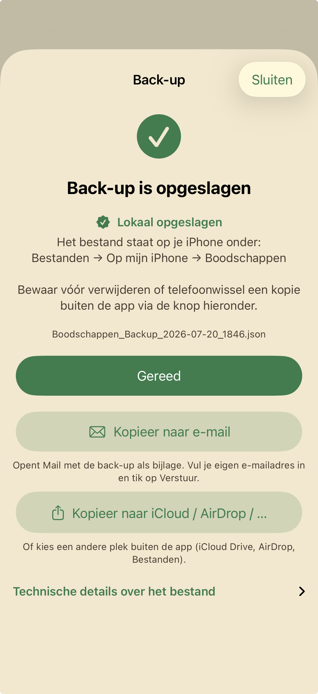
Back-up gelukt — bestand staat lokaal op je iPhone.
2
Herstel uit back-up
Tab Meer → Herstel uit back-up. Kies een back-up uit de lijst (handmatig of automatisch; bestandsnamen met Boodschappen_Backup_Auto_ zijn automatische avondkopieën). Of tik Ander bestand kiezen voor een .json uit Bestanden of Mail. Na herstel staan ook je categorieën- en supermarktenlijst weer goed (in back-ups vanaf deze app-versie). Let op: herstellen vervangt alle huidige gegevens in de app.
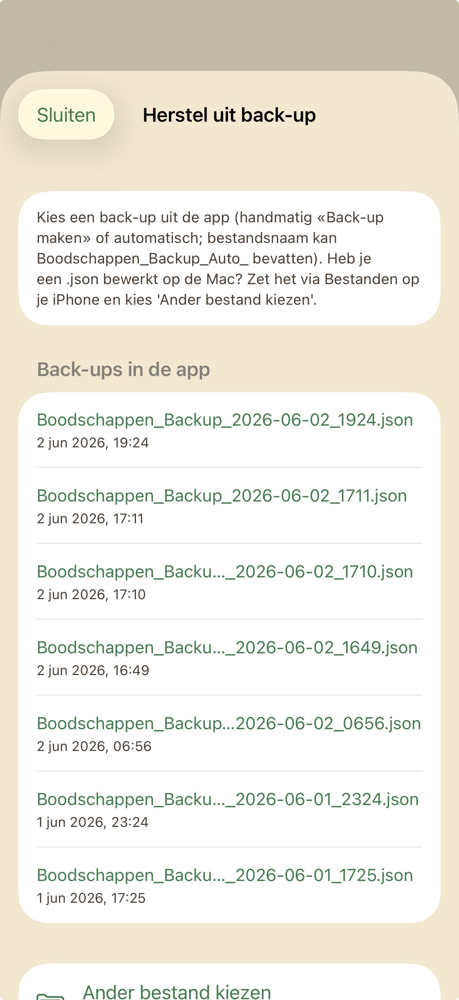
Kies een back-up om je gegevens terug te zetten.
3
Gratis & Volledig vergelijken
Tab Meer → Gratis & Volledig vergelijken. Gratis: scannen, max. 3 lijsten, 200 catalogusproducten en 40 bonnen — plus favorieten, vergelijken, back-up en widget. Volledig heft die limieten op en voegt budget per lijst/bon, maandstatistieken, lijstsjablonen en de prijsgeschiedenisgrafiek toe. Meer prijzen: prijsoverzicht op de website.
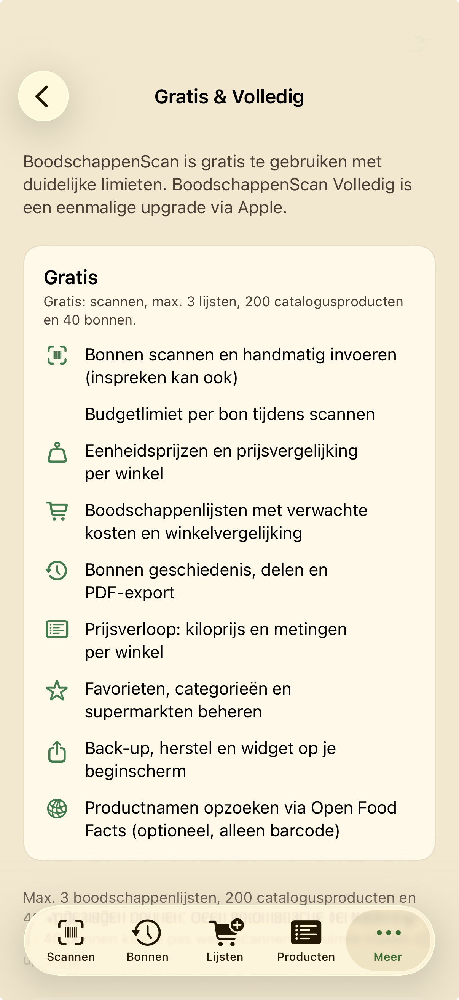
Overzicht Gratis versus Volledig onder tab Meer.
4
Upgrade afronden
Tik op BoodschappenScan Volledig (bovenaan in tab Meer als je nog geen Volledig hebt, of via Gratis & Volledig vergelijken). Je ziet het aankoopscherm met alle Volledig-voordelen en de prijs via Apple (eenmalig, geen abonnement). Na aankoop verdwijnen de limieten. Herinstalleer je de app? Gebruik Aankoop herstellen met hetzelfde Apple ID. Vragen: support.
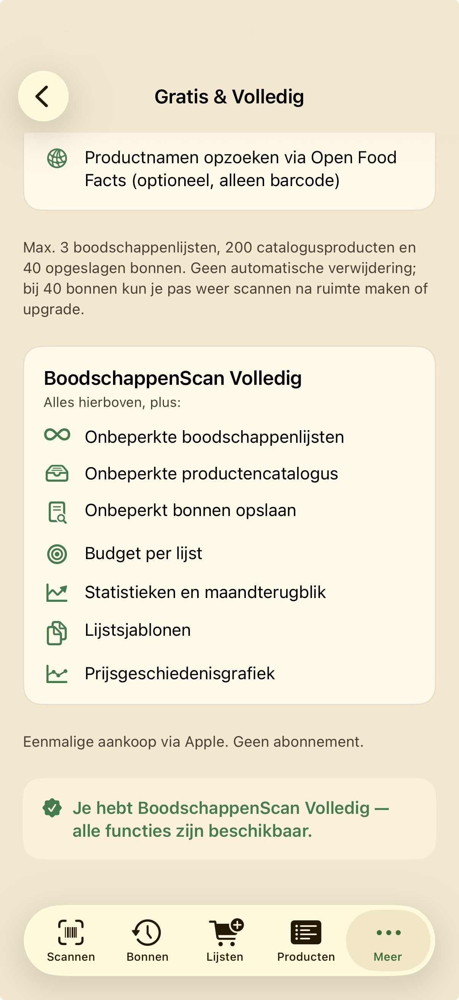
Aankoopscherm — koop via Apple of herstel een eerdere aankoop.
Nog hulp nodig?
Staat je vraag er niet tussen? Support voor contact en veelgestelde vragen. In de app: tab Meer → Handleiding of Rondleiding.